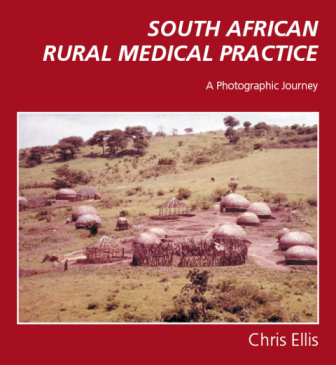

South African Rural Medical Practice - A Photographic Journy
The Rural Healthcare Initiative is a programme designed to support healthcare in the rural areas. its focus is on patients and equity in healthcare for rural and disadvantaged communities. The health services in these areas are currently dealing with the HIV/AIDS epidemic as well as malaria, tuberculosis and malnutrition.
There are two candles flickering in the rural areas. One is for the rural patient and the other for the rural health worker. They both need your help. We need doctors and healthcare workers of all disciplines. If you are interested in this challenging work, contact recruiter@rhi.org.za or for further information log onto Rural Health Initiative .

Table of Contents
Portfolio 1: A condition you will never see
Portfolio 2: The sores that creep up the leg
Portfolio 3: A teenager with a swollen leg
Portfolio 4: A pair of feet from Hlatikhulu
Portfolio 5: A child with bronchopneumonia
Portfolio 6: I wish I had taken a photograph
Portfolio 7: Things are not always what they seem
Portfolio 8: The perils of mountain climbing
Portfolio 9: In search of diagnostic certainty
Portfolio 10: What is a measle?
Portfolio 11: Diarrhoea waits for no man
Portfolio 12: The Creeping Eruption
Portfolio 13: Cicatrix Scalp
Portfolio 14: A case for Sherlock Holmes
Portfolio 15: Where the tar road ends
Portfolio 16: Coming and going